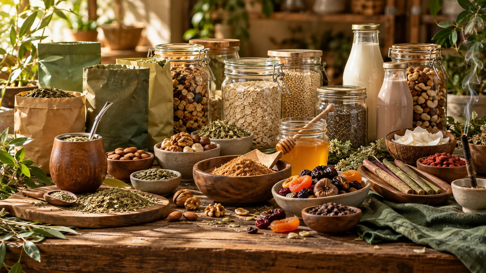

ARTEMISA · ALMACÉN HOLÍSTICA
Alimentación natural para tu día a día.
Yerbas, cereales, bebidas vegetales, frutos secos, miel y sahumerios para elegir con calma desde un solo lugar.

EXPLORÁ POR CATEGORÍA
Lo natural, a tu manera.
Encontrá yerbas, alimentos y pequeños rituales para sumar a tu día.
PARA CONOCER ARTEMISA
Elegidos para empezar.
Cargando productos...
Productos y precios ilustrativos para esta demo. Consultá disponibilidad y precio final antes de confirmar.
EL ALMACÉN
Una pausa para elegir mejor.
En Artemisa conviven las yerbas de siempre con cereales, bebidas vegetales, frutos secos, miel y otros productos para tus rutinas. Explorá la tienda y armá tu selección a tu ritmo.
Descubrir el catálogo ↗MÁS PARA EXPLORAR
Ver todo el catálogo ↗Encontrá eso que buscabas.
Cargando productos...
UN MOMENTO PARA VOS
Descubrir sahumerios ↗Bienestar en cada aroma.
También encontrás sahumerios para acompañar tus espacios y tus pausas cotidianas.